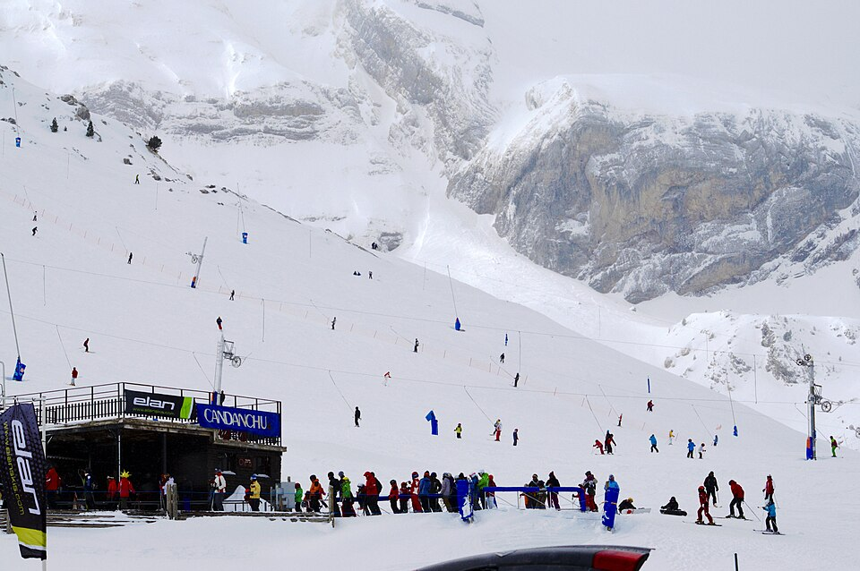
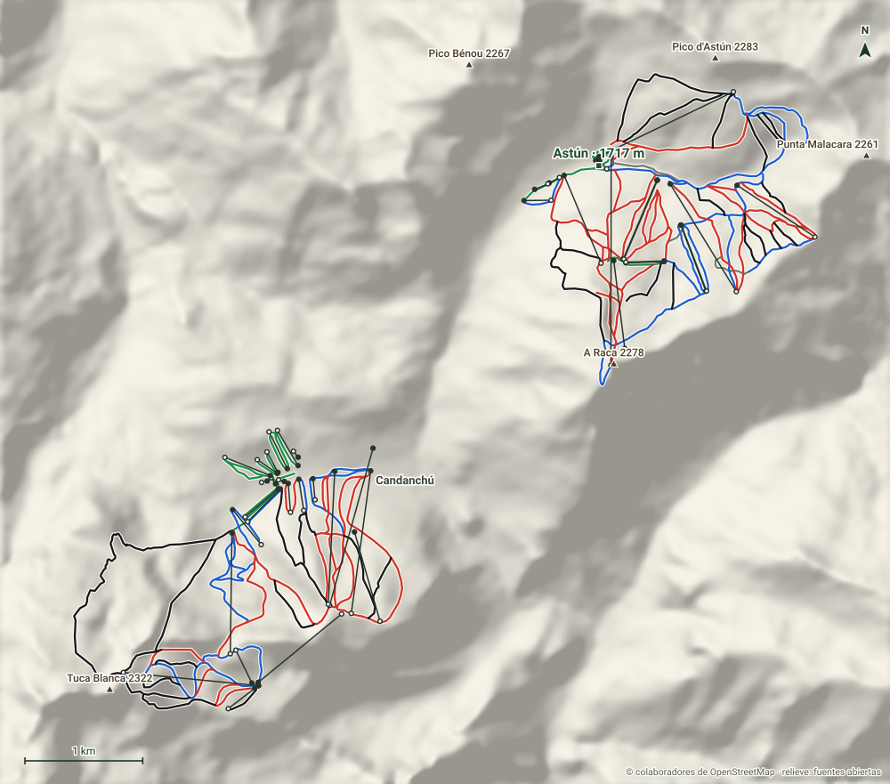

Astún y Candanchú
Valle del Aragón · Huesca
- Pistas
- 68 km
- 136 trazados
- Cota máxima
- 2272 m
- mínima 1514 m
- Desnivel
- 758 m
- esquiable
- Remontes
- 41
- 12 telesillas · 21 telesquís
Dos estaciones vecinas en la cabecera del Valle del Aragón, junto al puerto de Somport. Candanchú es la decana del esquí español; Astún ocupa el valle contiguo.
Foto: José Ibáñez · CC BY 3.0 · Wikimedia Commons
Hoy
Astún y Candanchú ahora mismo
Estado de pistas y remontes según el último parte publicado, y las webcams de la estación.
Webcams
Estado y webcams de Infonieve.es, a partir de los partes y cámaras de cada estación. Antes de salir, confírmalo en la web oficial o en su parte de nieve.
Próximos 7 días
Nieve y tiempo previstos
Previsión para la cota alta (2272 m) y la base (1514 m).
Previsión de modelos meteorológicos de Open-Meteo (CC BY 4.0). Es previsión, no observación: lo que hay abierto hoy está en el estado de pistas.
Plano
Plano de pistas
Pasa el cursor o toca una pista o un remonte para ver su nombre, longitud y desnivel.
Trazados: © colaboradores de OpenStreetMap (ODbL). No es el plano oficial de la estación ni refleja aperturas.
Mapa 3D
Astún y Candanchú en tres dimensiones
Relieve real, fotografía aérea, sol y sombras, viento e inclinación. Se carga solo cuando lo pides porque pesa.

Pantalla completa
Recomendado con wifi. En móvil, el mapa completo va mejor en la app.
Pistas
136 pistas, 68 km
La más larga con nombre es Loma Verde (2,9 km, negra).
VerdeMuy fácil
20 pistas · 5,1 km
Ver nombres
- Ciudad de Piedra 0,4 km
- Debutantes Manantiales 0,4 km
- Prado Blanco 0,3 km
- Pista Grande III 0,3 km
AzulFácil
42 pistas · 18 km
Ver nombres
- Rinconada 1,1 km
- Toboganes 1 km
- Pista Fácil 1 km
- Pradera 1 km
- Pista de La Raca 0,7 km
- Aguila 0,7 km
- Las Mugas 0,7 km
- 10 0,7 km
- Diagonal B12-Río 0,5 km
- Enlace Anayet 0,5 km
- Regreso 0,4 km
- Slalom Infantil 0,4 km
- El Bucardo 0,4 km
- 30 0,3 km
- Enlace Canal Roya 0,3 km
- Olla-Aralar 0,3 km
RojaIntermedia
41 pistas · 24,5 km
Ver nombres
- La Raca 1,8 km
- Muros 1,4 km
- Aludes 1,4 km
- Sarrios 1,3 km
- Narcisos 1,1 km
- Anayet 1,1 km
- Pastores 0,9 km
- Trompetas 0,8 km
- La Secreta 0,8 km
- Alto Aragón Superior 0,8 km
- Lomas 0,8 km
- Standard 0,8 km
- Stadio Slalom 0,7 km
- Tubo Tobazo 0,7 km
- Los Lirios 0,7 km
- Cornisas 0,6 km
- Alto Aragón Inferior 0,5 km
- Gamusino 0,5 km
- Estadio Las Marmotas 0,5 km
- Tubo Olla 0,5 km
- Angulo Tuca 0,4 km
- Paso Tortiellas 0,4 km
- Arañones 0,4 km
- Arándanos 0,3 km
- Aralar II 0,3 km
- Candanchú Esquí Club 0,3 km
- Marmotas 0,3 km
- Baches 0,3 km
- La Rabosa 0,3 km
- Bucardo 0,3 km
NegraDifícil
30 pistas · 19,4 km
Ver nombres
- Loma Verde 2,9 km
- Llanos del Sol 1,4 km
- Carabineros 1,2 km
- Somport 1,2 km
- La Zapatilla 1,1 km
- Mirador del Aspe 1 km
- Parapente 1 km
- Olympico 0,6 km
- Paso Pastor 0,6 km
- Ibones 0,5 km
- Paniquesa 0,5 km
- Don SImón 0,5 km
- Crestas 0,5 km
- Edelweiss 0,5 km
- Mariposas 0,4 km
- Quebrantahuesos 0,4 km
- Cascada 0,4 km
- Lisos 0,4 km
- Pana del Solano 0,4 km
- Trampolin 0,4 km
- Las Lomas 0,4 km
- Malacara 0,3 km
- Canal Roya 0,3 km
- Las Güixas 0,3 km
- Tubo Tuca 0,3 km
- Truchas 0,3 km
- Los Tubos 0,3 km
Sin clasificarSin dificultad en los datos
3 pistas · 1,2 km
Ver nombres
- Tritón 0,2 km
Remontes
41 remontes
El de mayor desnivel: Telesilla Cima Raca, 549 m.
| Remonte | Tipo | Longitud | Desnivel | Llegada |
|---|---|---|---|---|
| Telesilla Cima Raca | Telesilla | 1771 m | 549 m | 2272 m |
| Reina Sofía | Telesilla | 1222 m | 467 m | 1981 m |
| Telesilla Truchas | Telesilla | 1266 m | 432 m | 2146 m |
| Tobazo | Telesilla | 1385 m | 426 m | 1970 m |
| Alto Aragón | Telesilla | 1128 m | 414 m | 1969 m |
| Tortiellas | Telesilla | 1025 m | 376 m | 1995 m |
| Telesilla Pastores | Telesilla | 809 m | 333 m | 2025 m |
| Rey Juan Carlos | Telesilla | 1154 m | 331 m | 2238 m |
| Telesilla Aguila | Telesilla | 1072 m | 295 m | 2103 m |
| Navarros | Telesquí | 789 m | 248 m | 1970 m |
| Slalom II | Telesquí | 728 m | 220 m | 2013 m |
| Slalom I | Telesquí | 729 m | 219 m | 2012 m |
| Telesilla Canal Roya | Telesilla | 794 m | 207 m | 2129 m |
| Balsas | Telesilla | 753 m | 196 m | 2216 m |
| Sarrios I | Telesquí | 600 m | 156 m | 2085 m |
| Sarrios II | Telesquí | 599 m | 155 m | 2084 m |
| Tuca Blanca | Telesquí | 284 m | 103 m | 2010 m |
| Nido | Telesquí | 384 m | 85 m | 1697 m |
| Pista Grande II | Telesquí | 350 m | 84 m | 1676 m |
| Zapatilla | Telesquí | 309 m | 82 m | 1990 m |
| Pista Grande I | Telesquí | 345 m | 80 m | 1665 m |
| Slalom | Telesquí | 246 m | 80 m | 1671 m |
| Puente | Telesquí | 268 m | 77 m | 1662 m |
| Tuca | Telesilla | 916 m | 57 m | 1967 m |
| Manantiales | Telesquí | 230 m | 56 m | 1715 m |
| Príncipe de Asturias II | Telesquí | 393 m | 47 m | 1640 m |
| Aralar | Telesquí | 180 m | 47 m | 1624 m |
| Debutantes II | Telesquí | 415 m | 46 m | 1648 m |
| Príncipe de Asturias I | Telesquí | 369 m | 41 m | 1634 m |
| Debutantes III | Telesquí | 197 m | 36 m | 1633 m |
| Prado Blanco I | Telesquí | 325 m | 33 m | 2020 m |
| Prado Blanco II | Telesquí | 325 m | 33 m | 2019 m |
| Debutantes I | Telesquí | 205 m | 32 m | 1630 m |
| — | Cinta | 90 m | 17 m | 1730 m |
| Cinta Anayet | Cinta | 121 m | 15 m | 1679 m |
| Cinta 3 | Cinta | 64 m | 12 m | 1604 m |
| Cinta Collarada | Cinta | 97 m | 10 m | 1690 m |
| Cinta Ballón | Cinta | 63 m | 9 m | 1718 m |
| Cinta 1 | Cinta | 50 m | 6 m | 1597 m |
| Cinta 2 | Cinta | 65 m | 6 m | 1601 m |
| Cinta 4 | Cinta | 50 m | 4 m | 1604 m |
Longitud en planta y desnivel sobre el modelo de relieve. No incluye horarios ni estado de apertura.
Guía práctica
Antes de ir a Astún y Candanchú
Cómo llegar
Valle del Aragón, Huesca. Coordenadas del dominio: 42,7922, -0,5195.
Ver en OpenStreetMap · Cómo llegar en coche
En invierno comprueba el estado de la carretera y si hacen falta cadenas.
El terreno
- Base: Astún, 1717 m
- Pico de Aspe, 2640 m
- Llena del Aspe, 2599 m
- Brecha de Aspe, 2581 m
- Tuca Blanca, 2322 m
- Núcleos: Candanchú, Puerto Astún
Enlaces oficiales
Forfaits, horarios y aperturas cambian durante la temporada: los publica la estación.
Astún y Candanchú sin cobertura
Descarga este mapa en la app para Android y úsalo en pistas aunque no haya red.